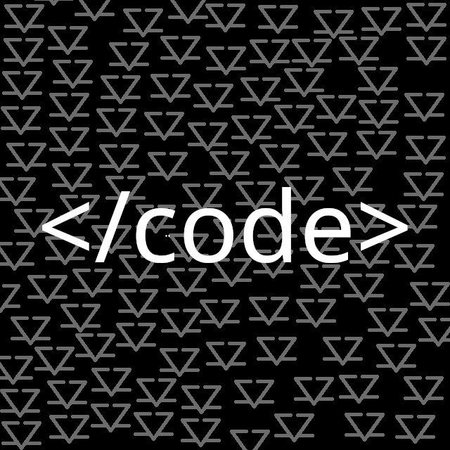

SvZ_Code
Занимаюсь программированием, балуюсь в GIMP,
экспериментирую в виртуалках, администрирую Arch
и иногда Alpine, ну и конечно же страдаю фигней
или...
ArduCat
Тоже мой ник. Активно использовался в 2024-2025 гг.
Я программист, почему-то люблю писать хрень которая запускает другую хрень.
Пишу на (от наиболее используемого к менее):
- C
- C++
- Kotlin
- Golang
- Python
- Lua
Также совсем изредка пишу на FASM, но знаю я его оооочень поверхностно.
В HTML и CSS я также не сильно силен, а этот сайт я делал молясь (нет).
Заинтересовал? ...Нет? Посети мои проекты.
В принципе очевидно, что я люблю играть. Например в:
- Minecraft (Java Edition)
- Garry's Mod
- Teardown
- People Playground
- Worldbox
- Team Fortress 2
- Kerbal Space Program
А прошел я:
- Half Life 2
- Half Life: Blue Shift
- Half Life: Opposing Force
- Portal
- Portal 2
- Postal 2
- Teardown
- Clustertruck
- GTA 5
- Detroit: Become Human (но не на все концовки)
- И много еще каких игр, но я забыл их названия
Предложить какую-то игру мне можно по почте (ага, да, я серьезно, посети связь). Но пишите мне только названия, бинарник открывать не буду!!!